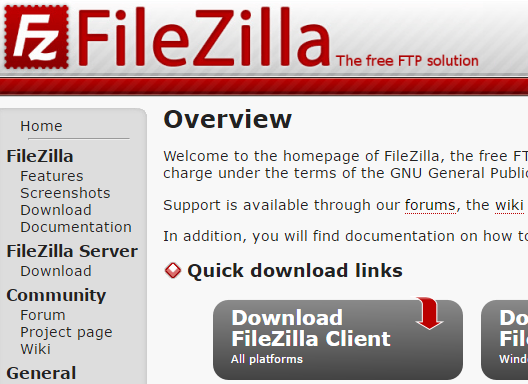
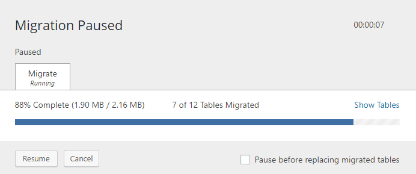

You Can Set Up A
WordPress Dev Environment
on
Windows
Thanks for stopping in
You may be familiar with ...
Windows BSOD circa Win XP
May have seen this in a previous life.
Despite the ever present Windows BSOD, it really does work as a dev environment.
I'm going to show you that you really can set up ...
Goals For This Session
Create environment on a Windows 10 box with ...
Familiar Windows UI
Robust toolset
Easily duplicated
Low cost
Includes features:
Local build & testing
Smart file editing
FTP connection to host server
Version Control & Deployment
This is What I Have On My Desktop
Local by Flywheel - LAMP stack
Visual Studio Code - editor
FileZilla FTP
Git - version control
WP Migrate DB - deployment
To put it more specifically, the workflow includes local dev and file structure,
full site local testing with smart editing tools,
version control, easy file + db upload and finally
deployment/upload to public interwebs
Who am I and why am I up here?
40+ years in IT
Beginning with software and now returning to it
Freelance web developer and business owner
Started with Microsoft -
Before we get much further, please allow me to offer a little background on myself. I did work with initial versions of DOS/MS-DOS. Windows 3.1 so I come by this Windows affinity quite naturally.
Today's Development Environment
Local by Flywheel - https://local.getflywheel.com/
The primary tool in my dev is Local by flywheel.
Flywheel purchased the premium OS X tool from Pressmatic in December 2016
and ported it to multiple environments.
I had previously used Desktopserver from ServerPress, and still use it for sites being developed for older PHP environments. I am able to run Local by Flywheel on a Windows Surface Pro 4 tablet running Windows 10 Pro with 8 GB RAM.
Editor Preference - Visual Studio Code
Free
Open Source
Runs Everywhere
FTP Client - Really?

Yes - I insist!
FileZilla - Just get it
No editing files using the dashboard editor
You need to get comfortable with this tool.
define('DISALLOW_FILE_EDIT',true);
No Editing themes, plugins, or
Add to
Repeat after me - I will not edit files through the WordPress dashboard. I will edit them in my code editor and then save them to my website.
Local By Flywheel (LBF)
Quick Windows Install
Uses .NET, VirtualBox, Docker
Includes database utility, SSL cert authentication, Email handler
Installs additional support utilities
470MB download. Don't do it here.
Extra apps are installed if not already present on your system.
Not going to go thorugh the LBF install. Its a typical Windows install.
Default install to c:\Users\{username}\Local Sites
Creating A New WordPress Site with Local
"Live" Demo
Build new site
See environment tools
Access WP Admin
See new site
Instead of a live demo of building a new site. I have a quick video that goes through the process.
Add New Site - Near Real Time
Let's watch this quick video and continue on the back end
Demo: Adding New Site on Local
Local Dev Environment Exists on Windows What does it look like and what do I do with it?
WordPress Lives on Windows New WP Site folder structure on C:\
Notice all familiar WP folders in the APP folder
Easy access for local editing
Editor - Visual Studio Code Next element is the editor.
Code Editing / Development
Right Click LBF Admin "Show Folder"
Open Local Project Folder VSC
Edit Source - PHP, CSS, JS
Create files/folders
Drag/drop files & folders
Intellisense - Code aware - syntax highlighting, auto-complete
VSC runs on Windows, Linux, and even macOS.
offer link to Download
LBF - Right Click show Folder - Drill to Public folder
VSC has nice set of extensions for PHP and WordPress
New versions each month
This is what we're talking about
Action bar on left
VSC - Open website project folder Pulling in the entire folder tree offers availability to access all files, even if you have no need to edit them. I find it very helpful when searching for WordPress hooks using the "find in open folders" search.
VSC - Browse to theme folder Complete file structure open for editing.
Edit any of the php, css or JS files in your project. create new directories and files. Build your entire customization layout right from the editor side panel.
Editing functison.php to add that perfect snippet you found online.
Test Changes
Edit & Save files
Browser Refresh
Repeat ad nauseam
Beauty of local dev means no file transfers to remote host.
Editing live in your dev environment.
Refresh browser to see success.
lather-rinse-repeat
A Little Deployment Anyone? Basic Assumptions:
New WordPress Installation Exists on Host
WP Migrate DB Installed and Activated
Migrate DB Pro handles handshake
Authenticates connection
Uploads DB to staging / live server
Performs Search & Replace on db
Upload wp-content folder via FTP
Again, emphasis on "little"
Focusing on local environment
WP Migrate DB PRO makes my life better.
With these tools the magic of deployment is like waving your handshake
Waving of Hands
Ok. A little more about this magic stuff
Deployment Magic with
Create New Migration Profile
WP Migrate DB works off profiles that you set up to control destination of deployment. By deployment I'm talking about moving your working site to a public serveer - production or staging.
Have a Production profile
Push Local db to Password Protected Remote
We want to push our local db to the remote. Remote / staging or production site is currently PW protected so need to enter authentication for connection to succeed. We copy the URL & key from the DB Pro install on the remote.
Connect Successful. Search & Replace Set Automatically
connection is complete. Authentication has been added. DB search & replace is shown. Find references to local dev and replace with remote/live site details.

Migration in Progress
Database being migrated from local development to remote site.
Migration Completed
WordPress database migrated
Dull FTP Upload of WP-CONTENT
FileZilla
SFTP/FTP connection to remote site
Drag WP-CONTENT from local to remote
The first upload will take some time, since plugins and media will be going.
Sigh
Lather · Rinse · Repeat
Review with client - revise locally - deploy, repeat
Time For A Little Control
Git Version Control
Create a local repository
Add your project folder
Remainder of Git process
Emphasis on "little" - we will hit on the start-up steps
Git Integrated with Visual Studio Code Demo
Init repo from VSC
Stage all changes - all files
Use a .gitignore to limit files under control
Theme / Child theme
Custom plugins
Here again a pseudo live demo. Using Visual Studio Code I can get Version control initialized right inside the project. Here we open the project folder, inuitiate the Source Control command CTRL-SHFT-G, pick the folder and commit the new files. Use gitignore and remove the majority of the files. I usually add my child theme folder and any custom plugins into source control.
Demo: Git with Visual Studio Code
It Is Happening Even if it sounds quiet at your local WordPress technical gathering ...
Wrapping It Up You CAN setup a nice WordPress dev environment on Windows
Local Server: Local by Flywheel
Editor: Visual Studio Code
FTP Client: FileZilla
Source Control: Integrated Git
Deployment: WP Migrate DB
You can do this, despite the sound of silence on this at many of our local WP events.
To put it more specifically, the workflow include local development, full site local testing with smart editing tools, version control, easy file + db upload and finally deployment/upload to public interwebs
Simon & Garfunkel - 1964 - Wednesday Morning, 3 am